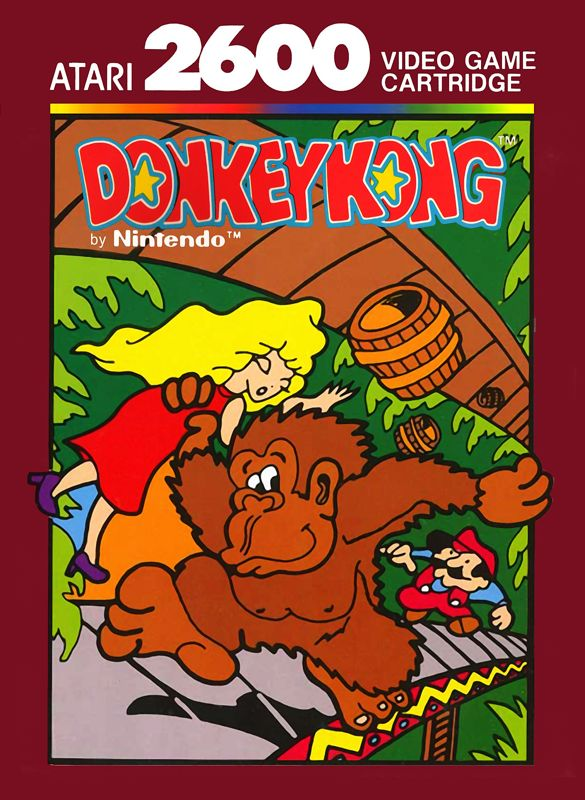

Video Game Review

Donkey Kong
Atari 2600
Donkey Kong, originally developed by Nintendo and released in arcades in 1981, is a seminal title in the
history of video games. Its Atari 2600 adaptation, developed by Coleco and released in 1982, brought the
classic arcade experience into players' homes, albeit with some limitations due to the hardware constraints.
In this review, I will discuss various aspects of the game, including the story, gameplay, graphics, and
sound.
Story
In Donkey Kong, players take on the role of Jumpman (later known as Mario), a heroic character who must
scale a series of platforms to rescue his love interest, Pauline, from the clutches of the titular giant
ape, Donkey Kong. The game's straightforward and engaging narrative set the stage for many future
platforming games and established the foundation for the now-iconic Mario franchise.
Gameplay
Donkey Kong on the Atari 2600 retains the core gameplay mechanics of its arcade counterpart, with players
climbing ladders, leaping over obstacles, and dodging hazards to reach Pauline at the top of the screen. The
Atari 2600 version features two of the four original arcade levels: the iconic barrel level and the rivet
level. While the reduced number of levels is a limitation of the home console adaptation, the game still
presents a considerable challenge, as players must navigate the levels with precise timing and reflexes.
Graphics
Due to the Atari 2600's hardware constraints, the graphics in this adaptation of Donkey Kong are
understandably less detailed and less colorful than those in the original arcade version. However, the
game's visuals are still recognizable and charming, effectively capturing the essence of the arcade
experience. The simplified character sprites and platforms retain the charm and appeal of the original game,
despite the hardware limitations.
Sound
The sound design in Donkey Kong on the Atari 2600 is minimalistic but effective. The game features a limited
number of sound effects, such as the iconic jump and barrel smash sounds, which convey the necessary audio
feedback to the player. Although the Atari 2600 lacks the capacity to reproduce the arcade version's catchy
tunes, the sound effects in this adaptation manage to evoke a sense of nostalgia and maintain the game's
charm.
Conclusion
Donkey Kong on the Atari 2600 is a challenging and enjoyable adaptation of the classic arcade game, despite
the limitations imposed by the home console's hardware. With its engaging gameplay, charming visuals, and
minimalistic sound design, the game provides a nostalgic and entertaining experience for fans of the
original arcade title and those interested in the early days of gaming. While it may not perfectly replicate
the arcade experience, Donkey Kong on the Atari 2600 stands as a testament to the enduring appeal of this
iconic game and its impact on the history of video games.
Did you enjoy my review of this video game? Check out one of my favorite game reviews below or see a
list of my reviews!
More importantly, I'm always looking for new music to enjoy. Let
me know what you're currently listening to!
My Favorites
Read why these albums are my all-time favorites!